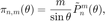
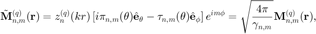

Vector Spherical Wavefunctions
Vector spherical wavefunctions (VSWFs) are a basic building-blocks in the theory of optical scattering on nano-particles. Although the VSWFs have very beautiful analytical properties, their definitions are different in different references and code implementations. In the following, we compare and summarize the definitions of VSWFs and related special functions (e.g., Legendre polynomials and spherical harmonics) in (i) Matlab® and Mathematica® build-in functions, (ii) Zhu-Xi Wang, textbook 'Introduction of Special Functions', (iii) M. I. Mishchenko, et. al., 'Scattering, Absorption and Emission of Light by Small Particles', (iv) Optical tweezers toolbox (OTT) and (v) Prof. Zhi-Fang Lin's note.
Contents
Legendre Polynomials
- In Matlab®, Legendre Polynomials for and positive integer are defined as
and, for  , the associated Legendre functions are
, the associated Legendre functions are
With this definition, Legendre Polynomials are normalized to
The same definitions are also used in Mathematica®, Mishchenko's book, and Wang's book. Here is an example in Matlab®:
pmn=legendre(3, -1:0.01:1); plot(-1:0.01:1, pmn); % normalization n=3; [xlist, wlist]=model.math.misc.lgwt(50, -1, 1); inte=(legendre(n, xlist).^2) * wlist; norm=zeros(n+1,1); for m=0:n norm(m+1)=2.0/(2*n+1) * factorial(n+m)/factorial(n-m); end disp([inte, norm])
0.2857 0.2857
3.4286 3.4286
34.2857 34.2857
205.7143 205.7143
- Prof. Lin's note uses a different convention in , where is omitted, i.e.,

- OTT uses a different normalization convention, where are normalized to a constant :
Note that, essentially, OTT uses the same sign convention as Lin's note and the "fully normalized associated Legendre functions". (i.e., omitting the factor).
In addition, OTT uses the polar angle as the argument, instead of .
disp([ott13.legendrerow(n, pi/3) ,legendre(n, cos(pi/3), 'norm')/sqrt(2*pi)] );
[tlist, wlist]=model.math.misc.lgwt(50, 0, pi);
disp((ott13.legendrerow(n, tlist).^2) * (wlist.*sin(tlist)) * 2*pi);
-0.3265 -0.3265
0.0700 0.0700
0.3832 0.3832
0.2710 0.2710
1.0000
1.0000
1.0000
1.0000
- Legendre polynomials with negative are defined as (see e.g., Wang's book and Lin's Note)
However, Matlab® and OTT do not export Legendre polynomials with directly (only are exported). Legendre polynomials with negative are used when computing Spherical harmonic functions in OTT.
Spherical Harmonic Functions
Spherical harmonic functions  are defined as (Wang's book and Mathematica®)
are defined as (Wang's book and Mathematica®)
where
Matlab does not provide a direct implementation of sphercial harmonic functions, while Mathematica® and OTT do
n=5; m=3; disp(ott13.spharm(n, m, pi/3, pi/5)); disp(ott13.spharm(n, -m, pi/3, pi/5)); n=5; m=2; disp(ott13.spharm(n, m, pi/3, pi/5)); disp(ott13.spharm(n, -m, pi/3, pi/5));
-0.0868 + 0.2671i 0.0868 + 0.2671i -0.0491 - 0.1511i -0.0491 + 0.1511i
We checked that, OTT result differs to the Mathematica result by a factor of due to the different sign convention of Legendre polynomials. We denote Spherical harmonics of OTT by
In both Mathematica® and OTT implementations, the Spherical harmonics are normalized to unity (see Wang's book), i.e.,
and the following relation is satisfied (see Wang's book)
Spherical Bessel and Spherical Hankel Functions
Spherical Bessel and Spherical Hankel functions are used to describe the wave propagation in the radial direction.
- Spherical Bessel function of the first kind and second kind are indeed the corresponding Bessel function and of half-integer order
has fintite value at , while diverges at .
Matlab® does not provide a direct implementation of . OTT and Mathematica® have identical implementations.
plot(0:0.1:10, [ott13.sbesselj(0, 0:0.1:10)'; ... ott13.sbesselj(1, 0:0.1:10)'; ... ott13.sbesselj(2, 0:0.1:10)']);
- Spherical Hankel functions of the first kind and the second kind are half-integer order Hankel functions and .
Matlab® does not provide a direct implementation of . OTT and Mathematica® have identical implementations.
Vector Spherical Wavefunctions
With Spherical harmonic function , spherical Bessel functions and spherical Hankel functions , we can further define vector spherical wavefunctions and .
- Vector Spherical Harmonics
Before VSWFs, we first define vector spherical harmonics (VSHs) , , and . Here, we adopt the definition in the OTT documentation, but with a typo corrected in .
where and are

Because of the following facts (see Lin's Note)
The VSHs , and are orthorganal and are normalized as
- Vector Spherical Wavefunctions
In OTT, the electromagnetic fields are expanded using VSWFs as
where the VSWFs in OTT are defined as follows
![$$ \mathbf{N}^{(q)}_{n,m} (\mathbf{r})=
\frac{z^{(q)}_n(kr)}{N_n kr}\mathbf{P}_{n,m}(\theta,\phi) +
N_n\frac{(kr z^{(q)}_n(kr))'}{kr}\mathbf{B}_{m,n}(\theta,\phi)
=\sqrt{\frac{\gamma_{n,m}}{4\pi}} \left\{n(n+1)\frac{z^{(q)}_n(kr)}{kr} \tilde{P}_n^m(\cos\theta)
e^{i m \phi}\hat{\mathbf{e}}_r \right\}
+\sqrt{\frac{\gamma_{n,m}}{4\pi}}\left\{\frac{(kr z^{(q)}_n(kr))'}{kr}\left[\tau_{n,m}(\theta) \hat{\mathbf{e}}_{\theta}+i\pi_{n,m}(\theta)\hat{\mathbf{e}}_{\phi}\right]e^{im\phi}\right\}, $$](vswf_eq15300811246052004186.png)
where , or for or , the factor , and
Professor Lin's note does not explicitely define the VSHs , , and . The VSWFs in Prof. Lin's note were defined by the factor in the brace braket , i.e.,

Furthremore, In the field expansions, Prof. Lin's note explicitely includes a factor , i.e.,
where .
In qlib, we adopt the field expansion formulas in Professor Lin's note to calculate the expansion coefficients , and . When reproducing the fields by summing up, we use the OTT implementation of VSWFs and . According to the derivation above, an extra factor of should be included in the code.
Now, we discuss the expansion of magnetic field . For a time-harmonics wave in a linear, isotropic and homogeneous medium, the magnetic field relates to the electric field by [see ]

Using the relations between and [see]
and ( is the vacumme light velocity, is the refractive index, and is the wave impedance) one have